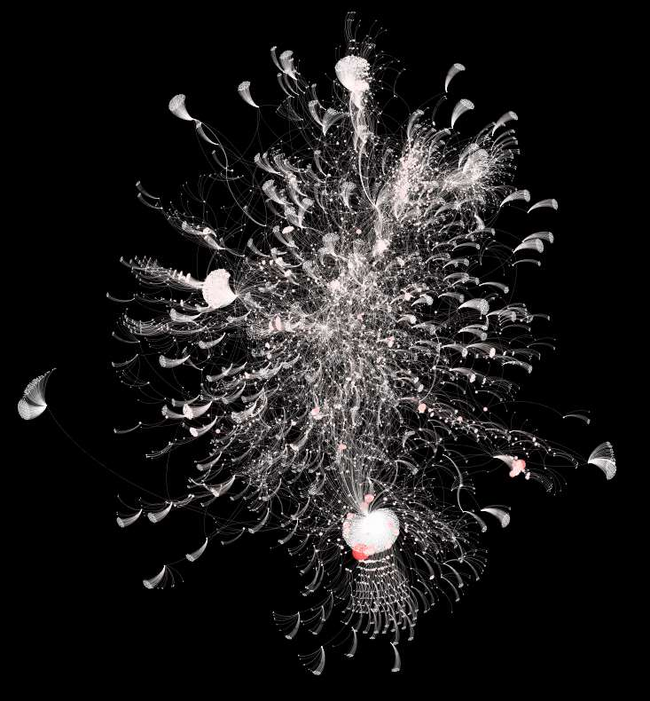
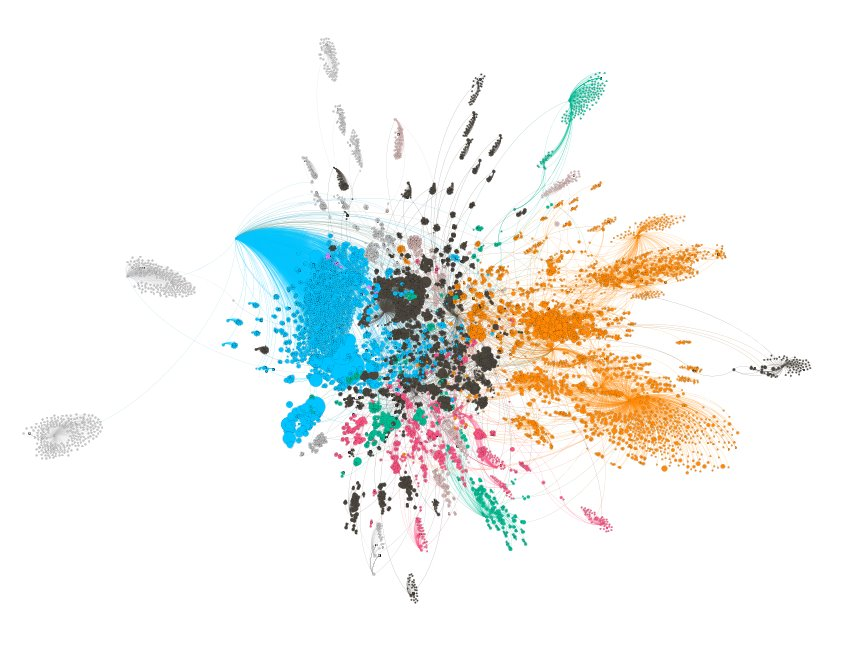
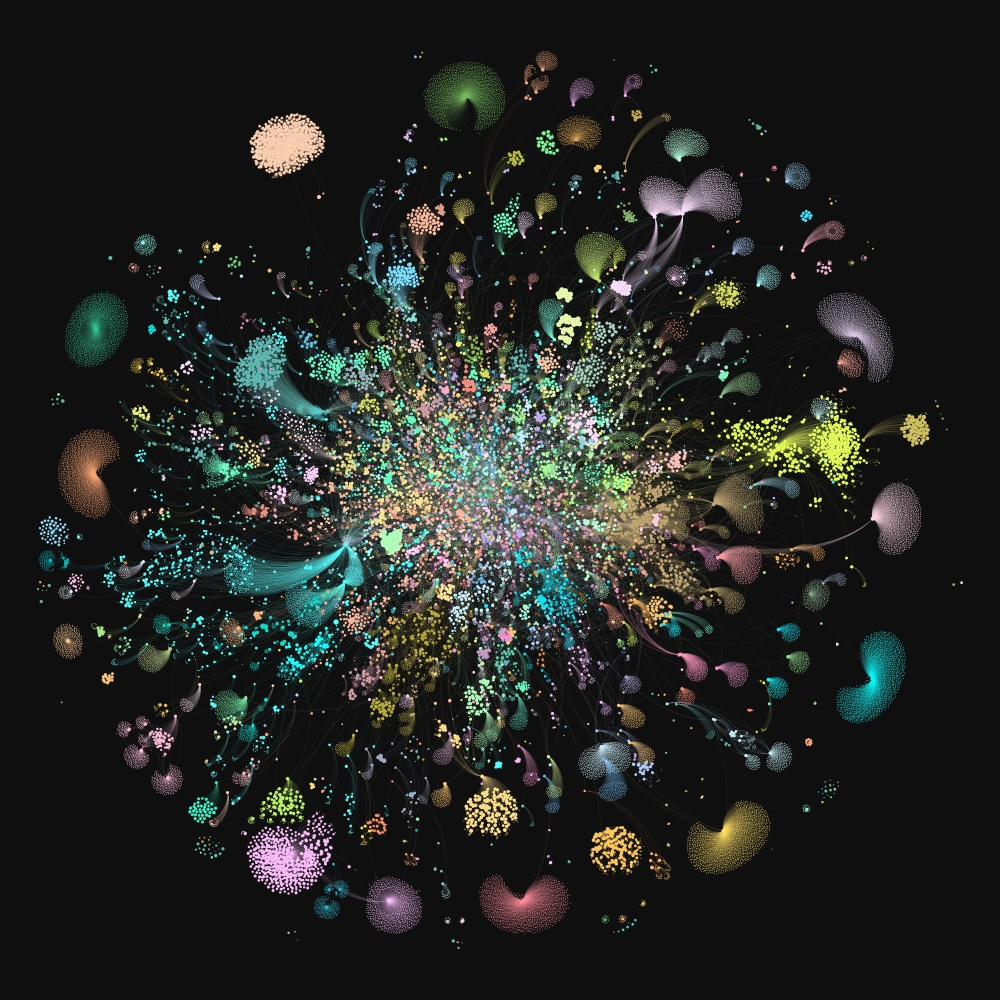

Oops, honey, I've failed the #dontdiealonechallenge!
Interact with WASD
I made this site as part of a personal growth.
I wanted to create something.
It'll be a challenge and a goal for me to do something I can write about every day.
I am a computer man.
Mapping Gemini
I discovered the Gemini protocol in July 2022 while browsing the F-droid store on my phone out of boredom.
Yeah, I was on the toilet.
It immediately grabbed my interest (a whole new internet to explore!) so I downloaded a browser.
If you don't know what the Gemini protocol is, their website
gives a concise description:
Gemini is a new internet protocol which:
Is heavier than gopher
Is lighter than the web
Will not replace either
Strives for maximum power to weight ratio
Takes user privacy very seriously
Almost immediately I saw it as a great project idea to map it all out into a neat grap.
It seems simple; write a crawler, stumble through every link and you're done!
And it did turn out to be so simple. I wrote the first implementation in Python,
and generated the following graphs with about 20k nodes representing individual pages on the Gemini network:


The code was suffering from a multitude of flaws,
the most fatal of which was that eventually every thread would be stuck trying to establish connection with a dead link.
This wouldn't be a problem with a rational system as timeouts are a thing.
My systems weren't rational, though. The first library I used, Ignition,
would get stuck endlessly trying to complete Socket.getaddrinfo() deep in the module's code.
Requests in Ignition have a timeout parameter, as is expected, but for some reason requests would still hang
when getaddrinfo() couldn't be completed.
I wasn't deterred from slapping my own ad-hoc patches onto the modules,
but I couldn't for the life of me figure out how I could add a timeout for this function.
Perhaps because it was because I had stayed up the entire night so I could fall asleep absurdly early the next day
in anticipation of a trip to London.
Or perhaps it was because I am an impatient and unexperienced programmer.
Either way, it didn't matter much, as my beloved compatriots struggling in the timeout struggle had led the way
and asked the same question on the internet! And alas, it turns out to be an
actual bug instead of user misconfiguration.
Many people suggested workarounds, mainly involving Unix-exclusive signals to kill the stuck threads,
but I as a Windows plebian could not afford to use such trickery (well, I could have, but I wasn't feeling like downloading WSL).
So I figured switching to another Gemini library altogether would be easier.
I looked around for a replacement before finally settling on Agunua.
I was only creating requests and reading data, after all, so replacing my current code wasn't problematic in the slightest.
In fact, Agunua's simple API was rather delightful to work with, and my code ended up looking a lot cleaner after a short rewrite.
However, I noticed a distinct lack of a timeout flag in its request function.
Peeking into the code I noticed the following comment:
WARNING: there is no timeout, so you risk being blocked for
ever, for instance if the server is nasty and accepts
connections but then never writes anything. The caller has to
handle this, using alarm signals or stuff like that. An
example is in the command-line client,
agunua.py. (Implementing a timeout with PyOpenSSL is *hard*,
see <https://github.com/pyca/pyopenssl/issues/168>.)

Click on image to view in 10000x10000 resolution.